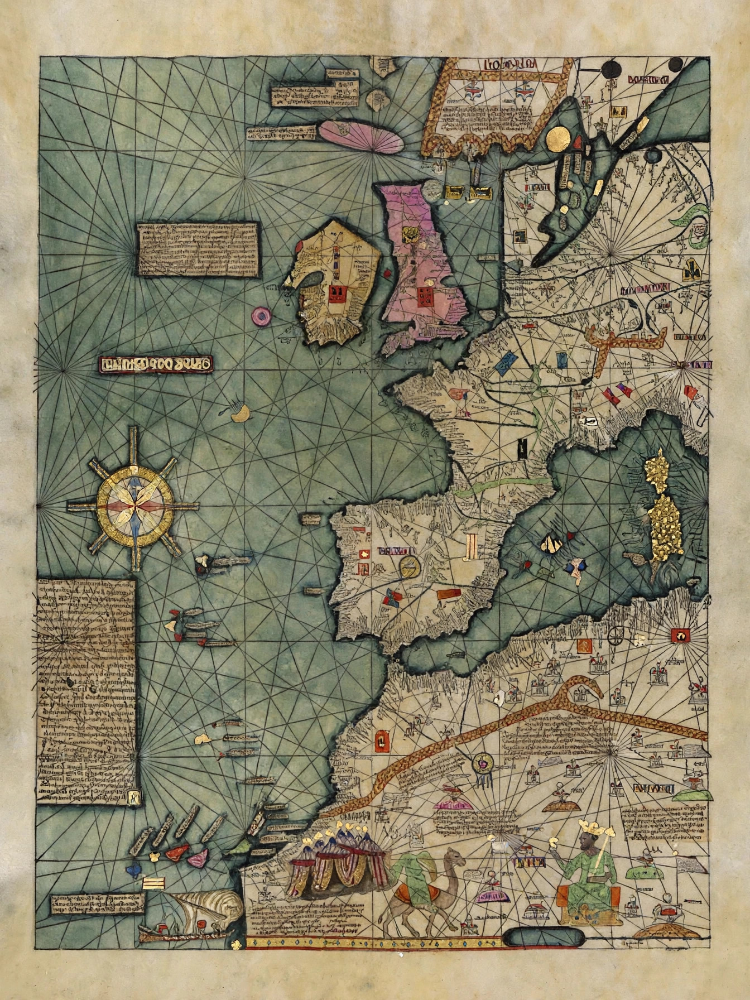

| Catalan Atlas | |
|---|---|
 | |
| Date | 1375 |
| Creator | Attributed to Cresques Abraham and his son Jehuda Cresques (Majorcan cartographic school) |
| Medium | Six vellum leaves mounted on wood panels |
| Size | c. 65 cm × 300 cm unfolded |
| Location | Bibliothèque nationale de France, Paris |
The Catalan Atlas (Catalan: Atles català) is the most important map of the medieval period produced by the Majorcan cartographic school, dated to 1375 and attributed to the Jewish cartographer Cresques Abraham of Palma de Mallorca and his son Jehuda. Commissioned in the circle of the Crown of Aragon — accounts link it to John I of Aragon — and later presented to Charles V of France, it survives in the Bibliothèque nationale de France in Paris. Combining the practical portolan-chart tradition with encyclopaedic learning, it is regarded as the masterpiece of medieval mapmaking.
The atlas consists of six large vellum leaves, mounted on wooden panels so that they fold. The first two leaves are a cosmographical and calendrical treatise — a circular calendar diagram, astronomical and astrological notes, tides, and the zodiac. The remaining four form a world map of the known world from the Atlantic to China, drawn at a scale of roughly 65 cm × 300 cm overall, crowded with hundreds of place-names, flags, rulers, caravans, ships, animals, and explanatory legends written in Catalan.
The Majorcan school stood at a crossroads of information: portolan charts compiled by Mediterranean sailors, travellers' accounts — above all Marco Polo's — the reports of missionaries and merchants, and classical and Arabic geography. The atlas depicts Mansa Musa of Mali, enthroned and holding a great gold nugget, with a legend describing his wealth and his pilgrimage; the Three Kings of the Magi in Asia; Prester John; the Queen of Sheba; caravans on the Silk Road and Chinese junks in the Indian Ocean. Its depiction of Africa's gold trade, of the Indian Ocean, and of East Asia was notably richer than most contemporary European work, though, like other portolan-derived maps, it is most accurate around the Mediterranean and sketchier the further it reaches. It is also celebrated as the first map to include a full wind rose (compass rose) — a hallmark of the portolan tradition.
The atlas entered the French royal library by 1380, catalogued among the treasures of Charles V, and has been in Paris ever since, apart from wartime evacuations. It was first reproduced in facsimile in the 19th century and has been exhibited and digitised for modern audiences. Alongside works like the Fra Mauro map of the following century, the Catalan Atlas marks the summit of manuscript cartography before print, and it remains an essential source for the geography, trade networks, and imagination of the late medieval world.
See also: Portolan chart · Marco Polo · Mansa Musa · Crown of Aragon